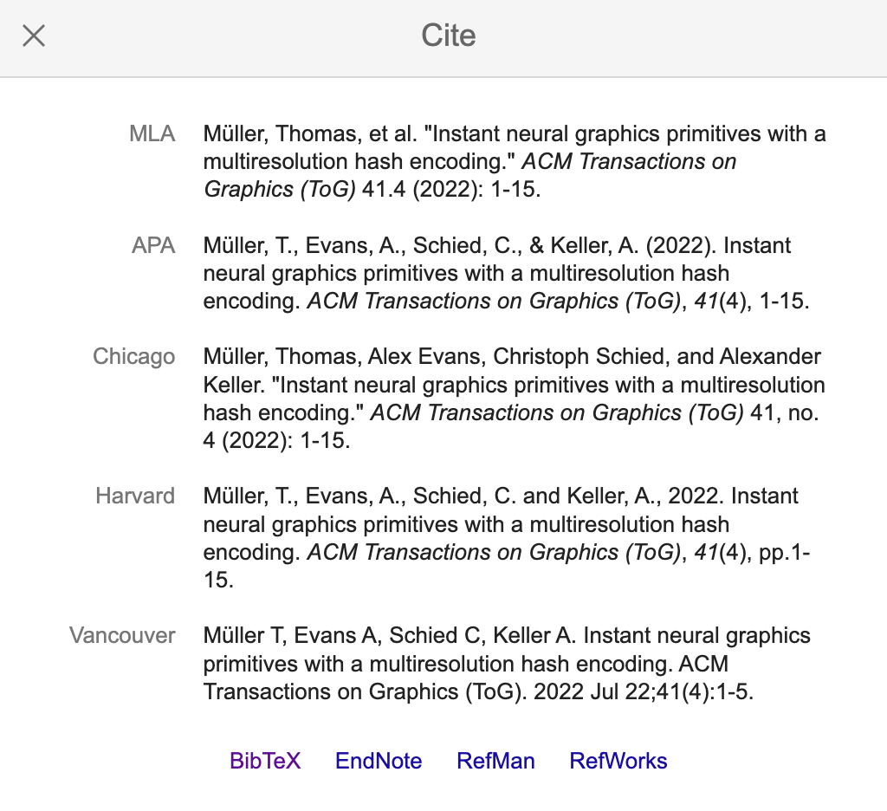
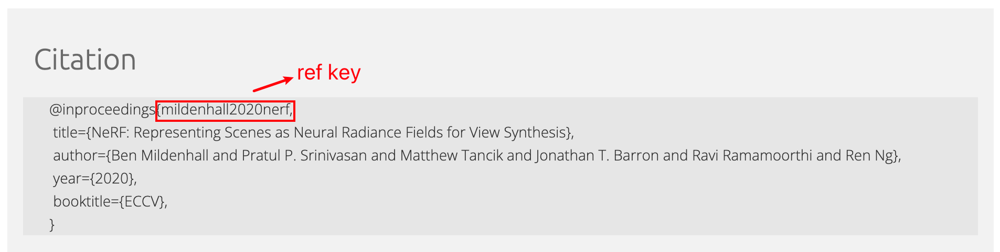
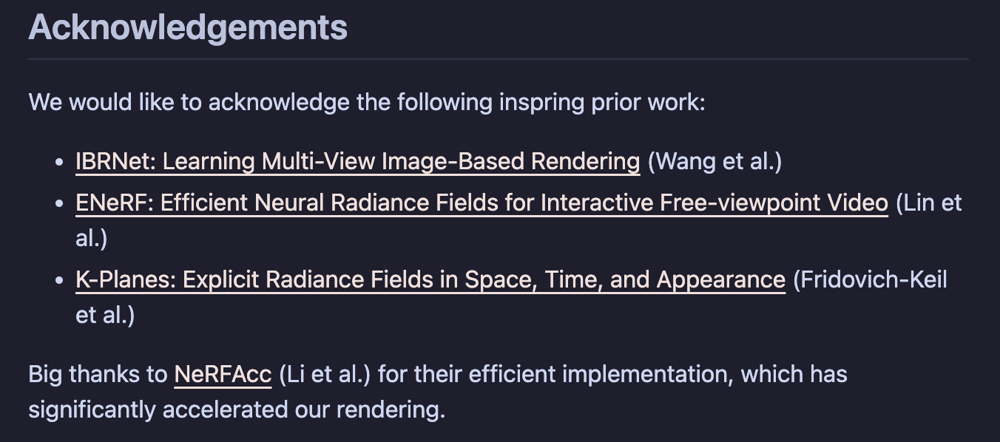
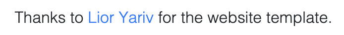
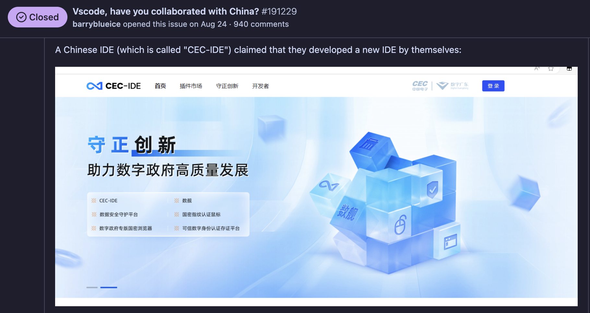
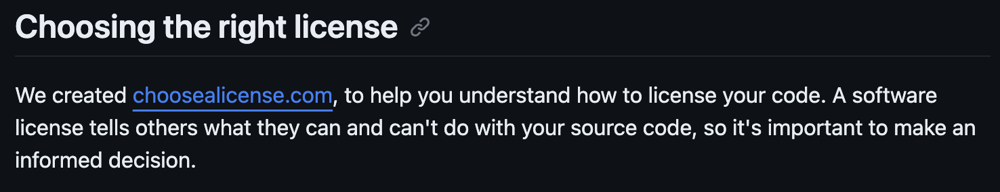

<!doctype html>
<html lang="en">

<head>
    <meta charset="utf-8" />
    <meta name="viewport" content="width=device-width, initial-scale=1.0, maximum-scale=1.0, user-scalable=no" />

    <title>lec3 - 论文阅读和科研探索(CV)</title>
    <link rel="shortcut icon" href="./favicon.ico" />
    <link rel="stylesheet" href="./dist/reset.css" />
    <link rel="stylesheet" href="./dist/reveal.css" />
    <link rel="stylesheet" href="./dist/theme/simple.css" id="theme" />
    <link rel="stylesheet" href="./css/highlight/github.css" />
    <script src="https://cdn.jsdelivr.net/npm/reveal.js-menu@2.1.0/menu.js"></script>

    <link rel="stylesheet" href="./assets/custom.css" />
</head>

<body>
    <div class="reveal">
        <div class="slides"><section ><section data-markdown><script type="text/template">


<div class="middle center" style="position: relative;">
  <div style="width: 100%; display: inline-block; vertical-align: top; margin-top: 1em">
  
    <h1>lec3 - LaTeX 排版和文献引用</h1>
    <hr>
    <p>计算机学院朋辈辅学课程 -- 论文阅读和科研探索(CV)</p>
    <p>By <a href="https://github.com/cxzhou35">@Chenxu Zhou</a></p>
    <div style="text-align: right; margin-top: 2em; margin-right: 1em;">
      <p>2023.12.9</p>
      <p>Powered by <a href="https://github.com/webpro/reveal-md">@reveal-md</a></p>
      <p>template copyright <a href="https://github.com/TonyCrane">@TonyCrane<i class="fab fa-github"></i></a></p>
    </div>
  </div>
</div>

</script></section><section data-markdown><script type="text/template">

## News Highlights

[Animated AI Visualization](https://animatedai.github.io/)


</script></section><section data-markdown><script type="text/template">

## Table of Contents

1. LaTeX 排版简介
    1. 基础 LaTeX 语法
    2. 数学公式
    3. 常用环境
2. 文献引用
    1. 引用方法与格式
    2. 版权意识与版权声明

</script></section></section><section ><section data-markdown><script type="text/template">

<div class="middle center">
<div style="width: 100%">

<div style="position: absolute; top: 0; right: 0; ">
    
</div>

# Part.1 LaTeX 排版简介

部分内容 copyright [@TonyCrane/PracticalSkillsTutorial](https://github.com/TonyCrane/PracticalSkillsTutorial)

</div>
</div>

</script></section><section data-markdown><script type="text/template">

## 1. 基础 LaTeX 语法

- 安装：[一份简短的关于 LaTeX 安装的介绍](https://github.com/OsbertWang/install-latex-guide-zh-cn)
- 学习：[一份（不太）简短的 LaTeX2e 介绍](https://github.com/CTeX-org/lshort-zh-cn)（即 lshort）
    - 或安装 TeXLive 后直接通过 texdoc lshort-zh-cn 命令打开
- 其他参考：
    - 符号大全：[The Comprehensive LaTeX Symbol List](https://www.ctan.org/pkg/comprehensive)
    - 手写查询：[Detexify](http://detexify.kirelabs.org/classify.html)
    - [LaTeX Wikibook](https://en.wikibooks.org/wiki/LaTeX)
    - [LaTeX Math Wikibook](https://en.wikibooks.org/wiki/LaTeX/Mathematics)
    - [LaTeX StackExchange](https://tex.stackexchange.com/)
    - [LearnLaTeX.org](https://www.learnlatex.org/en/)

</script></section><section data-markdown><script type="text/template">

## LaTeX 命令、代码结构

- 命令（控制序列）以 `\` 开头，对大小写敏感，如 `\LaTeX` -> $\LaTeX$
- 有些命令会对后续内容产生影响，可以用 `{}` 限定作用范围，如 {\bf bold}
- 命令可以接收参数，[] 中为可选参数，{} 中为必选参数，逗号分隔
- 一组常见的命令是**环境**
    ```latex
    \begin{environment}[optional args]{required args}
    ...
    \end{environment}
    ```
- 文件结构
    ```latex
    \documentclass{article} % 百分号为注释
    % 导言区，调用宏包、定义命令、进行文档设置等
    \begin{document}
    % 正文
    \end{document} % 后续忽略
    ```

</script></section><section data-markdown><script type="text/template">

## 文档类与宏包

- LaTeX 文档开头必须包含 documentclass 指定文档类
    - LaTeX 提供的基础文档类有 article report book 等
    - 可以通过可选参数配置字号、纸张大小等
        ```latex
        \documentclass[11pt,a4paper,twoside]{article}
        ```
- 宏包相当于第三方库，可以引入更丰富的扩展功能
    ```latex
    \usepackage[options]{package}
    \usepackage{package1, package2}
    ```
    - 需要确保已经安装，否则会报错
    - TeXLive full 会自带大部分会用到的宏包
    - `texdoc package` 可以查看宏包文档

</script></section><section data-markdown><script type="text/template">

## 字体样式和字号

- 两种修改字体样式的命令 {\bfseries bold} \textbf{bold}
    - 常用第二种
    - 都是“内置”字体的不同样式，自定义字体自行查阅
    - 常用的有：\textbf \textit \texttt \textsf \textsc \textsl
- 一种形式的命令来修改字号 {\tiny some text}
    - 从小到大：\tiny \scriptsize \footnotesize \small \normalsize \large \Large \LARGE \huge \Huge

```latex
\textbf{bold} \textit{italic} \texttt{typewriter}
\textsf{sans serif} \textsc{Small Caps} \textsl{slanted}

{\tiny tiny} {\scriptsize scriptsize} {\footnotesize footnotesize}
{\small small} {\normalsize normalsize} {\large large}
{\Large Large} {\LARGE LARGE} {\huge huge} {\Huge Huge}
```

</script></section><section data-markdown><script type="text/template">

## 章节和目录

- 应该对文档合理的分割为章、节、小节等，层次依次为
    ```latex
    \chapter{...} \section{...} \subsection{...} \subsubsection{...}
    \paragraph{...} \subparagraph{...}
    ```
    - 其中 \chapter 仅适用于 book 和 report 文档类
    - 可以加入可选参数表示短标题（显示在目录和页眉页脚中）
    - 可以带星号表示不编号（正常会带三级编号）
- 使用 \tableofcontents 生成目录（新的一章/一节）
    - 生成目录需要编译两次
    - 可以通过 \addcontentsline{toc}{*section*}{*name*} 手动添加目录项
- \appendix 之后为附录，编号从 A 开始

</script></section><section data-markdown><script type="text/template">

## 图片

- 需要使用 graphicx 宏包 \usepackage{graphicx}
- \includegraphics[options]{filename}
    - options：
        - width=...：宽度；height=...：高度
        - scale=...：缩放比例；angle=...：旋转角度（逆时针）
    - filename：可以是相对路径，也可以是绝对路径
        - 不能包含空格，建议全英文
        - 可以省略后缀名，会自动按照一定顺序搜索
- \graphicspath{{path1}{path2}...} 设置图片搜索路径
- 可以为 graphicx 或文档类设置 draft 选项
    - 显示等大图片框架，而非实际插入图片

</script></section><section data-markdown><script type="text/template">

## 2. 数学公式

- 编写数学公式推荐载入 [amsmath 宏包](https://ctan.org/pkg/amsmath?lang=en)
- 两种排版方式
    - 行内公式，用一对 $ 包裹
    - 行间公式，有几种方法：
        - equation 环境（带编号），\notag 或 equations* 取消编号
        - 一对 $$ 包裹或 <span>\\[</span>...\\] 包裹或 displaymath 环境
        - 其他多行环境 multiline align 等
- 工具
    - [Mathpix](https://mathpix.com/)（公式识别）
    - [MathType](https://www.wiris.com/en/mathtype/)（公式编辑器）
    - [LaTex Live](https://www.latexlive.com/##) （在线编辑器）

</script></section><section data-markdown><script type="text/template">

## 公式排版基础

- 直接写字母就表示变量，\ 开头是命令（命令后面不要加字母，建议加空格）
- 空格均会忽略，手动空格 \\, \\: \\; \ \quad \qquad，\\! 负空格
- 上下标使用 ^ 和 _，超过一个字符需要用 {} 包裹
    - 有些时候也表示子式，比如 \sum \int 等
- 特定函数有命令时要使用专门的命令，比如 \sin \log \lim 等
    - 没有的时候可以用 \mathrm{...} 包裹
- 内部要穿插文字时使用 \text{...} 包裹
    - 不要滥用 \text，文字占多数时考虑分开为多个行内公式
- 有两种样式，\displaystyle 和 \textstyle，即行间和行内
    - 例如 \sum（巨算符）的上下标位置，\int 的高度，\frac 的分数样式等会有不同
    - 也可以使用 \limits 和 \nolimits 改变上下标位置

</script></section><section data-markdown><script type="text/template">

## 常用数学符号

- 希腊字母：\alpha $\alpha$ \beta $\beta$ ... \Gamma $\Gamma$ \Delta $\Delta$ ...
- 无穷大 \infty $\infty$；根式 \sqrt{...} n 次根 \sqrt[n]{...}
- 一些省略号 \dots $\dots$ \cdots $\cdots$
- 分式 <span class="heti-skip">\frac{分子}{分母} \dfrac{分子}{分母} \tfrac{分子}{分母}</span>
- a\bmod b $a\bmod b$；x\equiv a\pmod{b} $x\equiv a\pmod{b}$
- \bar{} \vec{} \hat{} \overline{} \underline{} \widehat{} \overrightarrow{}
- \left( \right) 等自动匹配大小 \left. \right. 取消一侧
- \bigl( \Bigr) \biggl( \Biggr) 等手动大小
- ...
- 更多参考 lshort 或[符号大全](https://www.ctan.org/pkg/comprehensive)
- [LaTeX 数学公式大全 - lowa_BattleShip](https://www.luogu.com.cn/blog/IowaBattleship/latex-gong-shi-tai-quan) 也是一个不错的整合

</script></section><section data-markdown><script type="text/template">

## 特殊数学字体

- 在公式环境中不能使用 \textbf \textit 等命令
- 针对数学环境中的字符有特定的命令

| 命令           | 样式                        | 备注                   |
|----------------|-----------------------------|------------------------|
| \mathrm{...}   | $\mathrm{ABCDEabcde1234}$   |                        |
| \mathit{...}   | $\mathit{ABCDEabcde1234}$   |                        |
| \mathbf{...}   | $\mathbf{ABCDEabcde1234}$   | 粗斜体使用 \boldsymbol |
| \mathsf{...}   | $\mathsf{ABCDEabcde1234}$   |                        |
| \mathtt{...}   | $\mathtt{ABCDEabcde1234}$   |                        |
| \mathcal{...}  | $\mathcal{ABCDE}$           | 只有大写               |
| \mathbb{...}   | $\mathbb{ABCDE}$            | 只有大写，依赖 amssymb  |
| \mathfrak{...} | $\mathfrak{ABCDEabcde1234}$ | 依赖 amssymb           |
| \mathscr{...}  | $\mathscr{ABCDE}$           | 只有大写，依赖 mathrsfs |

</script></section><section data-markdown><script type="text/template">

## align/aligned 对齐环境

- 最常用 align 环境进行多行公式对齐
- 用 & 分隔/标记对齐位置，用 \\\\ 换行
    ```latex
    \begin{align}
    a &= b + c  &     g &= h + i \\
      &= d + e + f  &   &= j
    \end{align}
    ```
- 用 \notag 取消编号，或使用 align* 环境
- 可以使用 aligned 环境嵌套在其他环境中（如 equation）来提供对齐部分
    - aligned 本身并不会进入数学模式，需要在数学模式中嵌套使用

</script></section><section data-markdown><script type="text/template">

## 矩阵环境

- 可以使用内置的 array 环境，用法类似 tabular，左右需手动加括号
- 推荐使用 amsmath 的矩阵环境
    - matrix 不带定界符
    - pmatrix 小括号；bmatrix 中括号；Bmatrix 大括号
    - vmatrix 单竖线；Vmatrix 双竖线
    - 写法同样 & 分隔，\\\\ 换行

```latex
\[
\mathbf{A} = \begin{bmatrix}
a_{11} & a_{12} & \cdots & a_{1n}\\
a_{21} & a_{22} & \cdots & a_{2n}\\
\vdots & \vdots & \ddots & \vdots\\
a_{n1} & a_{n2} & \cdots & a_{nn}\\
\end{bmatrix}
\]
```

</script></section><section data-markdown><script type="text/template">

## 3. 常用环境

在 LaTeX 中，环境是一种特殊的命令，其中的内容有特定的样式，通常的结构如下：

```latex
\begin{environment}[optional args]{required args}
...
\end{environment}
```

常用的环境：

- 列表：itemize enumerate
- 对齐：center flushleft flushright
- 代码：verbatim lstlisting（listings 宏包）
- 表格：tabular
- 浮动体：figure table

</script></section><section data-markdown><script type="text/template">

## 列表

- itemize 无序列表，enumerate 有序列表
    - \usepackage{enumerate} 可选 [(1)] [i.] [a)] 等指定编号格式
    - \setcounter{enumi}{*i*} 后下一个 item 从 *i*+1 开始编号
- \item 生成列表项，后接内容，\item[...] 可以自定义符号标签
    - 使用 description 环境这里标签会加粗左对齐表示关键字
- 可以嵌套列表，最多四层

```latex
\begin{itemize}
    \item First item
    \item[+] Second item
    \begin{enumerate}[i.]
        \setcounter{enumi}{2}
        \item First subitem
        \item Second subitem
    \end{enumerate}
\end{itemize}
```

</script></section><section data-markdown><script type="text/template">

## 对齐环境

- center 居中，flushleft 居左，flushright 居右
    - 这里指的是对齐**环境**
    - 会在环境上下额外生成间距
- \centering \raggedright \raggedleft
    - 注意 raggedright 实际上是左对齐
    - 这里指的是对齐**命令**
    - 不会在环境上下额外生成间距，直接改变对齐方式

```latex
\begin{center}some text\end{center}
\begin{flushright}some text\end{flushright}

\centering some text

\raggedleft some text
```

</script></section><section data-markdown><script type="text/template">

## 代码块

- verbatim 环境
    - \begin{verbatim}...\end{verbatim}
    - 会原样输出，等宽显示，不会解释其中的 LaTeX 命令
- 行内代码可以使用 \verb*\<delim>*...*\<delim>*（一般用 \verb|...|）
    - 也可以使用 \verb*|...|，* 表示显示空格
- listings 宏包可以生成高亮代码，可以自行了解

```latex
\begin{verbatim}
#include <stdio.h>
int main() {
    printf("Hello, world!\n");
    return 0;
}
\end{verbatim}

\verb|\LaTeX| and \verb*|printf("Hello, world!\n");|
```

</script></section><section data-markdown><script type="text/template">

## 表格

- 表格使用 tabular 环境，有时可以使用 array 宏包提供辅助
- 直接使用 tabular 环境会和文本混排
    - 一般使用 table 包裹变成浮动体
- \begin{tabular}{cols}，其中列格式 cols：
    - l/c/r：左/中/右对齐
    - |：竖线分隔；@{}：去除列间距；@{...}：自定义列间内容
    - p{width}：指定列宽，自动换行
    - *{num}{col}：重复 num 次 col 列格式
- 内容一行中用 & 分隔，用 \\\\ 换行，\hline 画横线，\cline{*i*-*j*} 部分横线
- booktabs 宏包提供了三线表的线型 \toprule \midrule \bottomrule
- 合并单元格等更多更复杂的功能也支持，可以自行了解
- 推荐使用 [TablesGenerator](https://www.tablesgenerator.com/) 生成

</script></section><section data-markdown><script type="text/template">

## 浮动体

- 使得图片和表格脱离文本，独立寻找合适的位置排放
- 使用 figure 环境包裹图片，table 环境包裹表格
    ```latex
    \begin{figure}[placement]
        ...
    \end{figure}
    ```
    - placement：h 当前位置，t 页面顶部，b 页面底部，p 单独一页，! 忽略限制
    - 默认 tbp，按 h-t-b-p 顺序
    - 限制包括：每页浮动体数量，占页面比例，浮动体间距等
- 内部使用 \caption{...} 添加标题（后可以接 \label{...} 用于引用）
- 可以 \listoftables \listoffigures 生成目录

</script></section><section data-markdown><script type="text/template">

## 环境引用

- 使用 \label{*ref*} 添加标签，\ref{*ref*} 引用，\pageref{*ref*} 引用页码
- 可以使用 \label 记录的位置：
    - 章节标题后紧接着使用
    - 行间公式中任意位置使用
    - 有序列表每个 item 中使用
    - 浮动体 caption 后紧接着使用
    - 定理环境内部使用
- 不会记录编号的命令不可以使用（比如 \section*）

</script></section><section data-markdown><script type="text/template">

## 更多资料

进一步学习：

- [一份（不太）简短的 LaTeX2e 介绍](https://github.com/CTeX-org/lshort-zh-cn)（lshort）
- [LaTeX 论文写作教程](https://github.com/xinychen/latex-cookbook)（latex-cookbook）

技巧与注意事项：

- [guanyingc/latex_paper_writing_tips](https://github.com/guanyingc/latex_paper_writing_tips)
- [dspinellis/latex-advice](https://github.com/dspinellis/latex-advice)
- [TeXtw/latex-convention](https://github.com/TeXtw/latex-convention)

符号查阅表：

- 符号大全：[The Comprehensive LaTeX Symbol List](https://www.ctan.org/pkg/comprehensive)
- 手写查询：[Detexify](http://detexify.kirelabs.org/classify.html)

</script></section></section><section ><section data-markdown><script type="text/template">

<div style="position: absolute; top: 0; right: 0; ">
    
</div>

<div class="middle center">
<div style="width: 100%">

# Part.2 文献引用

</div>
</div>

</script></section><section data-markdown><script type="text/template">

## 1. LaTeX 中的引用方法与格式

在 LaTeX 添加 References 通常有两种方法：

- 使用 `.bib` 文件，使用 bibtex 编译，建立参考文献数据库，引用的时候调用所需要的参考文献
- 通过 `\bibitem{ref_key}` 指令，手动编写参考文献

在正文中引用参考文献的方法：使用 `\cite{ref_key}` 指令，引用参考文献

引用格式（一般会议或者期刊都有要求的格式，可以在官网上找到）：

<div align=center></div>

</script></section><section data-markdown><script type="text/template">

## 通过 \bibitem 指令引用

在正文中添加 References 的方法：

```latex
{
    \begin{thebibliography}{99} % 99 表示最多有 99 个参考文献
        \bibitem{ref_key} Author, Title, Journal, Year
    \end{thebibliography}
}
```

缺点 :(

- 手动维护文献列表，在文献列表中手动进行排序和编号 ❌
- 不便于管理和更新 ❌
- 不利于文献数据库的复用 ❌
- 推荐使用第二种方法 -> 通过 .bib 文件引用 ✅

</script></section><section data-markdown><script type="text/template">

## 通过 .bib 文件引用

找到需要引用的论文对应的 bibtex，复制粘贴到要用的 `.bib` 文件中

<div align=center></div>

在正文中添加 References 的方法：

```latex
{
    \bibliographystyle{style_file} % 设置引用格式的文件，不需要写后缀
    \bibliography{main}            % 包含参考文献的 .bib 文件，不需要写后缀
}
```

</script></section><section data-markdown><script type="text/template">

## 2. 版权意识与版权声明

除了论文中引用他人的研究成果，我们在其他地方也要注意版权问题

- 使用网络上的图片，注明图片来源（Credit）
- 使用别人的代码框架、代码片段，注明代码来源（Acknowledgements）
    - 在自己的 project 中用了其他人的代码
    <div align=center></div>
    - 用了别人的 project page 作为模板
    <div align=center></div>
- 在其他使用了他人成果的地方，都请注明来源，尊重他人的劳动成果

</script></section><section data-markdown><script type="text/template">

## 重视 License

> License译为许可证，也可作为开源协议，它可以将自己创作的东西授权给他人使用，并规定了使用者有的权利和必须遵从的义务。<br>
> 现在很多优秀的开源项目都设置了License，不同License所约束的条件也不同。<span style="background-color: #0b61cd; color: white;">因此开源不等于免费，也不意味着没有约束。</span>

[VSCode GitHub Issue 191229](https://github.com/microsoft/vscode/issues/191229) 🤡

<div align=center></div>

</script></section><section data-markdown><script type="text/template">

## License 说明

GitHub 对 License 的说明：

<div align=center></div>

完整文档：[Licensing a repository](https://docs.github.com/en/repositories/managing-your-repositorys-settings-and-features/customizing-your-repository/licensing-a-repository)

常用的 License：

- Apache License 2.0
- MIT License
- BSD 3-Clause License
- MPL License 2.0
- GNU GPL v3.0

</script></section></section><section  data-markdown><script type="text/template">

<div style="position: absolute; top: 0; right: 0; ">
    
</div>

<div class="middle center">
<div style="width: 100%">

# Thank You

<hr/>

<div style="text-align: center; margin-top: 0; font-size: 30px;" class="heti-skip">Questions?</div>

</div>
</div>
</script></section></div>
    </div>

    <script src="./dist/reveal.js"></script>

    <script src="./plugin/markdown/markdown.js"></script>
    <script src="./plugin/highlight/highlight.js"></script>
    <script src="./plugin/zoom/zoom.js"></script>
    <script src="./plugin/notes/notes.js"></script>
    <script src="./plugin/math/math.js"></script>
    <script>
        function extend() {
            var target = {};
            for (var i = 0; i < arguments.length; i++) {
                var source = arguments[i];
                for (var key in source) {
                    if (source.hasOwnProperty(key)) {
                        target[key] = source[key];
                    }
                }
            }
            return target;
        }

        // default options to init reveal.js
        var defaultOptions = {
            controls: true,
            progress: true,
            history: true,
            center: true,
            transition: 'default',
            slideNumber: true,
            menu: {
                themes: false,
                width: "wide",
                transitions: false,
                markers: true,
                hideMissingTitles: true,
                openButton: true,
                openSlideNumber: true,
                custom: [
                    { title: 'Lectures', icon: '<i class="fas fa-external-link-alt">', content: getLecturesMenu() },
                ]
            },
            plugins: [
                RevealMarkdown,
                RevealHighlight,
                RevealZoom,
                RevealNotes,
                RevealMath.KaTeX,
                RevealMenu
            ]
        };

        // options from URL query string
        var queryOptions = Reveal().getQueryHash() || {};

        var options = extend(defaultOptions, {"transition":"slide","transitionSpeed":"fast","center":false,"slideNumber":"c/t","width":1000}, queryOptions);

        function getLecturesMenu() {
            var lectures = [
                { name: "#0 课程介绍和计算机视觉概论", src: "../lec0/" },
                { name: "#1 方向选择和科研入门", src: "../lec1/" },
                { name: "#2 文献检索和文献阅读", src: "../lec2/" },
                { name: "#3 LaTeX排版和文献引用", src: "../lec3/" },
                // { name: "#1 Shell 基础及 CLI 工具推荐", src: "../lec1/"},
                // { name: "#2 Git/GitHub 基础介绍", src: "../lec2/"},
                // { name: "#3 Markdown 语法及应用", src: "../lec3/"},
                // { name: "#4 LaTeX 排版简要介绍", src: "../lec4/"},
                // { name: "#5 如何排出规范、美观的文档", src: "../lec5/"},
                // { name: "#6 网络/网站基础知识概述", src: "../lec6/"},
            ]
            var lecturesMenu = '<ul class="slide-menu-items">';
            for (var i = 0; i < lectures.length; i++) {
                lecturesMenu += '<li class="slide-menu-item"><a href="' + lectures[i].src + '" style="text-decoration:none">' + lectures[i].name + '</a></li>';
            }
            lecturesMenu += '</ul>';
            return lecturesMenu;
        }
    </script>

    <script src="https://cdn.tonycrane.cc/heti/heti.js"></script>
    <script src="./assets/heti_worker.js"></script>

    <script>
        Reveal.initialize(options).then(() => {
            document
                .querySelector(".backgrounds")
                .setAttribute(
                    "style",
                    document.querySelector(".slides").style.cssText,
                );
        });
        Reveal.on("overviewshown", (event) => {
            document.querySelector(".backgrounds").setAttribute("style", "");
        });
        Reveal.on("overviewhidden", (event) => {
            document
                .querySelector(".backgrounds")
                .setAttribute(
                    "style",
                    document.querySelector(".slides").style.cssText,
                );
        });
        Reveal.on("resize", (event) => {
            document
                .querySelector(".backgrounds")
                .setAttribute(
                    "style",
                    document.querySelector(".slides").style.cssText,
                );
        });
    </script>
</body>

</html>
